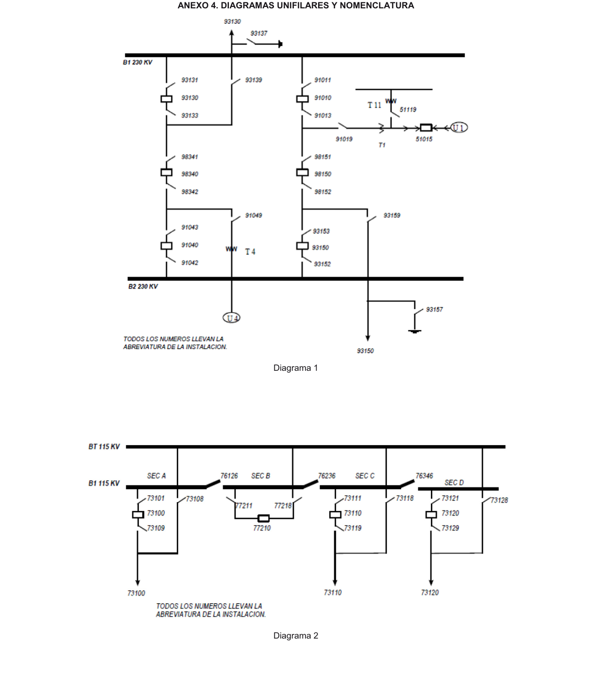
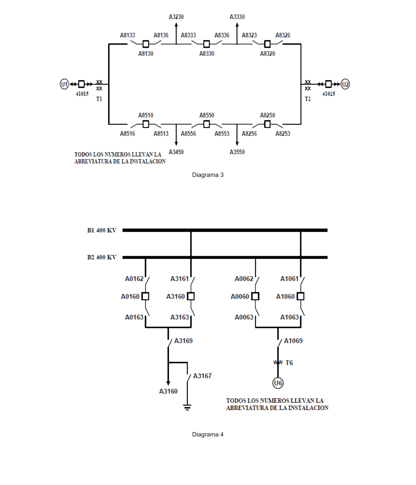
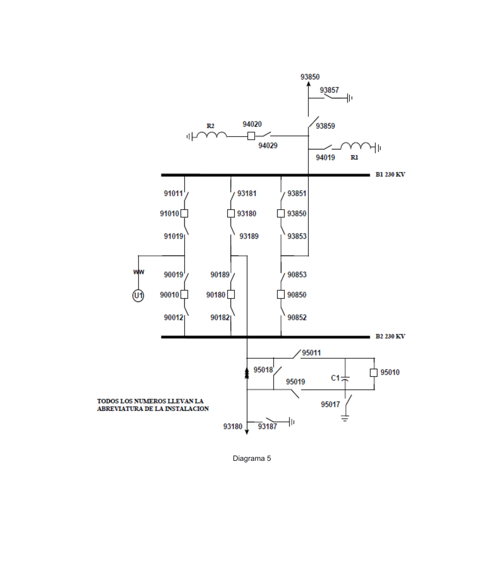
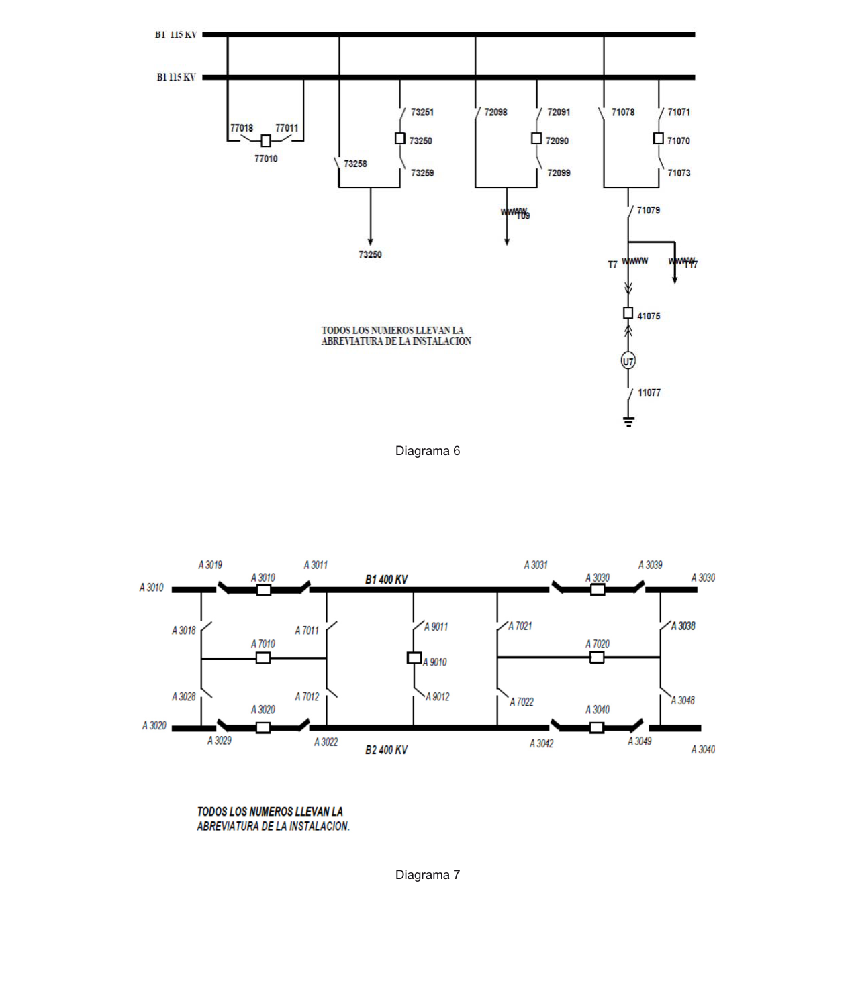
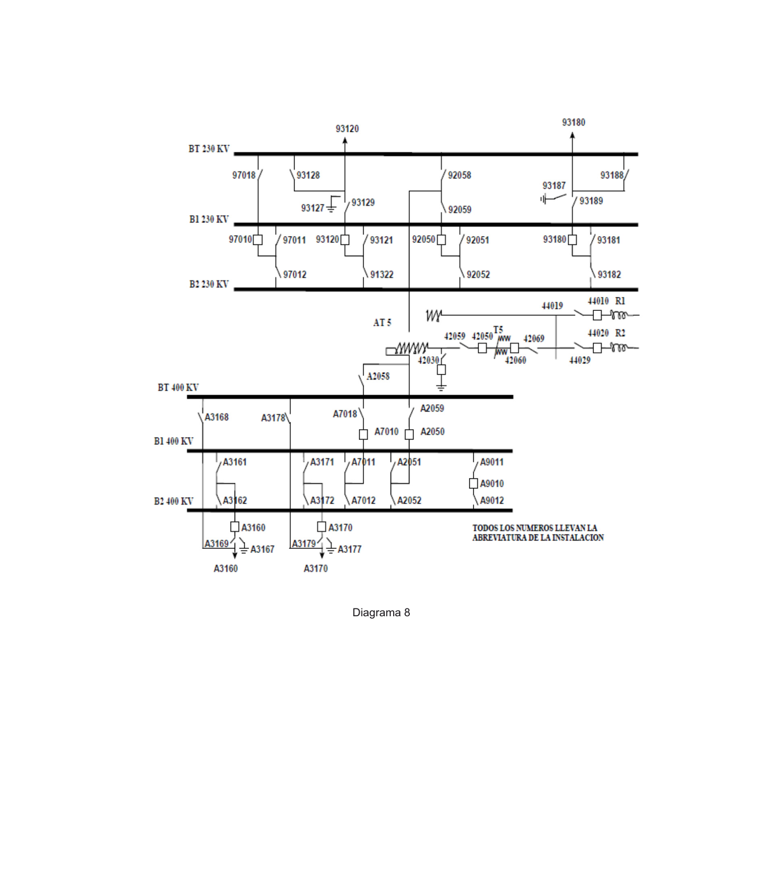
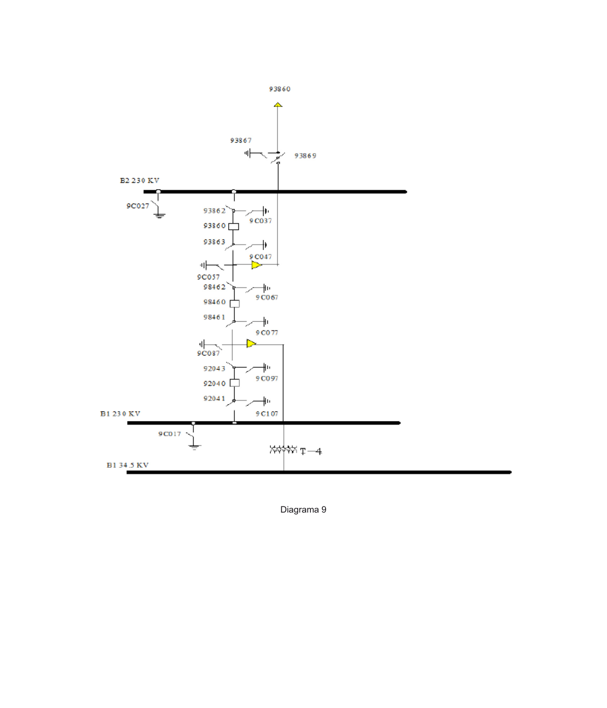

Manual Regulatorio de Coordinación Operativa
Define a detalle los lineamientos que deben cumplir el CENACE, Transportista, Distribuidor, Centrales Eléctricas, Centros de Carga y sus representantes en el MEM que intervienen en la operación del SEN, con la finalidad de garantizar la seguridad del personal, de las instalaciones y del propio SEN. Establece niveles operativos y los lineamientos para la comunicación, flujo de información, coordinación e interacción operativa de los Usuarios del SEN.
Cap. 1Responsabilidades
1.1 CENACE — carácter y observancia
- Carácter Manual de carácter técnico-operativo; establece las reglas a las que deben sujetarse los Operadores que intervengan en el Control Operativo del SEN.
- Vigilancia Corresponde a la CRE la vigilancia de la aplicación de las reglas, así como su revisión y actualización permanente acorde con la LIE, pudiendo apoyarse en CENACE, Transportista y Distribuidor.
- Facultad El CENACE ejerce el control operativo del SEN; Transportista, Distribuidor, Centrales Eléctricas y Centros de Carga ejercen el control físico de sus instalaciones, mediante la coordinación del CENACE.
Niveles operativos jerárquicos (1.1.3)
Coordinados por la GCN/GCA y subordinados técnicamente entre sí. Cada nivel tiene autoridad técnica sobre los niveles inferiores o con los que debe coordinarse.
| Nivel | Entidad responsable | Funciones principales |
|---|---|---|
| Primer | GCN / GCA | Ajustes a programas de Generación, RDC y porteo; límites de Transmisión; dirige la operación ante Disturbios que cubren varias GCR; activa EPS y EAR; coordina las GCR. |
| Segundo | GCR | Calidad, seguridad y Confiabilidad del SEN en su ámbito geográfico; Control Operativo de Generación, RDC, Usuarios Calificados y seguridad de la RNT/RGD del MEM. Se subordina al 1er nivel. |
| Tercer | Centros de Control del Transportista · Centrales Eléctricas y Centros de Carga en Alta Tensión | Control físico de sus instalaciones; filtrado preliminar de solicitudes de Licencia; coordinación con 2do y 4to nivel para Disturbios y control de tensión. |
| Cuarto | Centros de Control del Distribuidor · Centrales Eléctricas y Centros de Carga en Media Tensión | Control físico en su área; coordinación con el 3er nivel (salvo Centrales interconectadas a las RGD, que se comunican directamente con el CENACE). |
1.2 Sistemas de información, comunicación y control
- Registro El CENACE debe registrar en forma digital y guardar, por al menos 10 años, la información de planeación operativa, ejecución del Control Operativo y Operación del MEM.
- Grabación Los Centros de Control del CENACE graban los canales de voz dedicados al Control Operativo, manteniendo los registros por 2 años.
- Compatibilidad Debe existir coordinación y compatibilidad informática entre los Centros de Control y el EMS del CENACE, conforme al Manual de TIC.
- Información operativa Transportista, Distribuidor, Centrales y Cargas mantienen actualizado ante el CENACE: diagrama unifilar y de protecciones, puntos de sincronización, EAR/EPS, capacidades de Elementos, ajustes de protecciones, parámetros del Anexo 3 y sistemas de comunicación.
- Parámetros Las Centrales, previo a la primera sincronización, entregan todos sus datos; las correcciones por divergencia con eventos reales se hacen en un máximo de 180 días; el ajuste de controles se ratifica al menos cada 5 años o ante Modernización.
- Emergencia TIC El tiempo máximo de restablecimiento de infraestructura que provocó una emergencia es de 1 año, con informes trimestrales de avance al CENACE.
1.3 Operadores
- Relatorio En Centros de Control y Subestaciones se lleva un libro o sistema de captura llamado "Relatorio", con carácter probatorio; se conserva por al menos 10 años sin daños ni mutilaciones, en horario de 0 a 24 horas.
- Turno El Operador entrante es informado verbalmente por el saliente y por la lectura del Relatorio; si está incapacitado, no se le entrega el turno.
- Jerarquía Las instrucciones del Operador de la GCN prevalecen sobre las de la GCR, y las del CENACE sobre las de Transportista, Distribuidor, Centrales y Cargas.
- Islas En caso de disturbio, el Operador del CENACE puede ordenar la formación de islas eléctricas para el restablecimiento del Estado Operativo Normal.
- Comunicación El Operador se identifica por lugar, puesto y nombre; repite las instrucciones que recibe y pide que le repitan las que transmite, para confirmar el entendimiento.
1.4–1.6 Transportista, Distribuidor, RDC y respaldo
- Salidas Transportista y Distribuidor atienden los lineamientos del CENACE para sus programas de salidas; informan con 90 días hábiles de anticipación las obras que afecten la disponibilidad de la RNT/RGD del MEM.
- RDC Garantizada Un Recurso de Demanda Controlable Garantizada entrega al CENACE sus periodos de paro total o parcial con 36 meses de anticipación.
- Respaldo Los Centros de Control del CENACE, Transportista y Distribuidor pueden celebrar convenios de respaldo temporal ante caso fortuito que impida operar desde sus propios Centros de Control.
Cap. 2Fronteras operativas de responsabilidad
- Personal Los responsables de los Centros de Control envían al CENACE el listado de personal designado (Anexo 1), actualizado en diciembre de cada año o ante altas/bajas.
- Enlace directo La comunicación entre el personal operativo se efectúa por enlace directo, instalado y mantenido conforme al Manual de TIC.
- Emergencia Al presentarse un Estado Operativo de Emergencia, las redes de comunicación de todos los Centros de Control deben quedar totalmente disponibles.
- Fronteras Se completa el Anexo 2 (Enlaces de Fronteras Operativas entre Centros de Control), entregado al CENACE de forma anual o ante cada cambio, acompañado de un diagrama unifilar que indique las fronteras e instalaciones bajo responsabilidad.
Cap. 3Control de variables del SEN
El CENACE es el responsable del control de tensión, frecuencia y flujos de potencia del SEN.
3.1 Control de tensión
- Reactiva El CENACE usa los recursos de potencia reactiva de la RNT, RGD del MEM, Centrales y Cargas; ningún operador puede cambiar el estado de elementos de compensación reactiva sin autorización del CENACE.
- Coordinación Transportista y Distribuidor se coordinan para conexión/desconexión de compensación fija y cambios de Tap en bancos con baja tensión ≤ 35 kV.
- EPS El CENACE define y coordina los EPS para control automático de tensión (PR-27 baja tensión / PR-59 alta tensión); su implementación y disponibilidad corresponden a Transportista, Distribuidor, Centrales y Cargas.
- Central Eléctrica El CENACE envía consigna de factor de potencia (FP), potencia reactiva (MVAr) o tensión a la UTR de la Central, replicada a todas sus Unidades de manera automática.
3.2 Control de frecuencia
- Disponibilidad La Central pone a disposición del CENACE el despacho de sus Unidades, manteniendo su participación en el control de frecuencia.
- Acatar Centrales, Cargas, Transportista y Distribuidor acatan inmediatamente las instrucciones de conexión/desconexión de carga emitidas por el CENACE para el control de la frecuencia.
- Disparos Ante disparo por esquemas de baja/alta frecuencia, se informa de inmediato al CENACE los Elementos disparados y protecciones operadas; el restablecimiento queda sujeto a instrucciones del CENACE.
3.3 Control de Flujos de Potencia
- EAR El CENACE administra, define y coordina la implementación, modificación, retiro y validación de los EAR; su mantenimiento y disponibilidad corresponden a Transportista, Distribuidor, Centrales y Cargas.
- Seguridad RT El CENACE evalúa la seguridad del SEN en tiempo real, establece los Límites Operativos de seguridad con base en los límites físicos del Transportista/Distribuidor y publica las compuertas de flujo.
- Asíncronas El CENACE puede solicitar a Centrales Asíncronas limitar su generación a un valor (set point de MW enviado a la UTR), replicado a todas sus Unidades.
Cap. 4Instrucciones de Despacho de Central Eléctrica y RDC
4.1 Central Eléctrica
- Modificación La potencia activa y reactiva de las Centrales sincronizadas sólo puede modificarse por autorización o instrucción del Operador del CENACE.
- Pruebas El CENACE realiza pruebas de Control Primario con o sin aviso previo; todas las Centrales participan. Las Centrales ≥ 30 MW (Tipo D) instalan registradores para verificar su desempeño en Control Primario y Secundario.
- Licencias CE Las Licencias por mantenimiento, salida forzada o disparo se otorgan al iniciar el decremento de generación y finalizan al reconectarse la Unidad y alcanzar su valor de despacho. Existen Licencias de generación de prueba (puesta en servicio, régimen térmico, control de tensión/velocidad, verificación de capacidad).
- Capabilidad El CENACE opera la Unidad dentro de sus curvas de capabilidad; puede solicitar su incorporación al esquema de disparo automático de generación.
- Internacionales Según el Estado Operativo, el CENACE autoriza, restringe o solicita transacciones por los enlaces internacionales (Manual de Importaciones y Exportaciones).
4.2–4.3 Despacho de Generación y de Carga
- Sincronismo Cualquier Unidad se sincroniza al SEN sólo con autorización del Operador del CENACE; el operador de la Unidad sólo modifica generación por instrucción del CENACE (Sistema de Información del Mercado en tiempo real o vía voz) o ante emergencia.
- No despachable En Estado Normal no se sujeta a despacho económico la generación nuclear, geotérmica e intermitente; en Alerta o Emergencia toda esa generación acata la instrucción del CENACE por Confiabilidad.
- Hidráulica El despacho respeta los valores de generación hidráulica de los estudios de planeación y los gastos de agua de la CONAGUA, manteniendo márgenes de reserva en los embalses.
- RDC Los Recursos de Demanda Controlable cumplen las instrucciones de reducción de carga del CENACE y atienden de inmediato las modificaciones de lógica de los EAR.
Cap. 5Administración de Licencias
Define los lineamientos para solicitar, autorizar, conceder y retirar Licencias, garantizando la seguridad del personal, las instalaciones y el SEN. Las Licencias se clasifican en vivo o muerto (según el Elemento esté energizado o no) y pueden ser Programadas, No Programadas y de Emergencia.
| Estatus | Significado |
|---|---|
| En servicio | El Elemento y sus Equipos Asociados están en funcionamiento en el SEN. |
| Disponible | Listos para entrar en servicio en cualquier momento. |
| En Licencia | No disponibles; pueden realizarse trabajos o maniobras en ellos. |
Gestión de solicitudes (5.1.4–5.1.6)
- Trazabilidad La Solicitud de Licencia (corto plazo) proviene de una Solicitud de Salida autorizada (mediano plazo); se convierte en Licencia si cumple los lineamientos del CENACE en tiempo, forma y condiciones del SEN.
- Anticipación Las Licencias en troncal de 400 y 230 kV o de maniobras complicadas se solicitan con mínimo 4 días hábiles y un análisis técnico documentado.
- Resolución El CENACE resuelve a más tardar a las 12:00 h de dos días laborables previos; las solicitudes para sábado, domingo y lunes se resuelven el jueves a las 12:00 h.
- Usuarios Finales Si la Licencia interrumpe a Usuarios Finales o servicios de TIC, se solicita con mínimo 4 días hábiles para avisar conforme al Art. 66 del Reglamento.
- Inicio Tras autorizar la Licencia, no deben pasar más de 5 minutos para iniciar las maniobras.
Tarjetas auxiliares (5.1.12)
Maniobras (5.2)
- Catálogo Cada Centro de Control mantiene un Catálogo de Maniobras de sus instalaciones (libranza, normalización, maniobras de seguridad y especiales), actualizado y enviado al CENACE.
- Confirmación Las maniobras se transmiten por canal de voz, identificando el equipo por su nomenclatura; el Operador las dicta y el ejecutor las repite como confirmación, ejecutándose en la secuencia del Catálogo.
- Librado Para librar un equipo se desconectan bobinas de cierre, se cierran válvulas de aire, se bloquean mecanismos y se pone a tierra; los interruptores de equipo blindado se desacoplan.
- Emergencia El Operador del CENACE es el único que autoriza la ejecución de maniobras y la desconexión/reconexión de carga en condiciones de Emergencia. Ante operación de relevador de reposición manual, el Operador de Subestación no reconecta en ninguna circunstancia.
- CENAGAS Ante emergencia en gasoductos, el CENAGAS se coordina con el CENACE para minimizar impactos a la Generación.
La programación, autorización, ejecución o cancelación de mantenimientos (5.3) se realiza conforme al Manual de Programación de Salidas de las Reglas del MEM. El CENACE autoriza una sola Licencia por Elemento librado y por Centro de Control (5.4).
Cap. 6Prevención y atención de Disturbios
Los Operadores del CENACE supervisan y controlan operativamente la RNT y las RGD del MEM; los Centros de Control del Transportista, Distribuidor, Centrales y Cargas supervisan variables eléctricas y ejercen el Control Físico de sus redes. Ante un disturbio existe la obligación de restablecer de forma coordinada, ordenada, segura y confiable, debiendo: minimizar el tiempo de interrupción a Usuarios Finales, minimizar la desconexión de elementos, proteger los Elementos del SEN, respetar los límites de seguridad y proteger al personal.
| Paso | Acción |
|---|---|
| 1 | El Operador (Transportista/Distribuidor/Central/Carga) informa de inmediato al CENACE: hora, Elementos disparados y protecciones operadas. |
| 2 | Revisa protecciones, aplica su procedimiento interno y declara qué Elementos quedan indisponibles. |
| 3 | Junto con el CENACE define la estrategia de restablecimiento. |
| 4 | Con autorización del CENACE sigue el Procedimiento de Restablecimiento. |
| 5 | El CENACE instruye la secuencia de restablecimiento (maximizando carga restablecida). |
| 6 | El Operador ejecuta la secuencia instruida por el CENACE. |
Para el disparo de un banco de transformación con baja tensión ≤ 35 kV, si no es posible la prueba de energización el CENACE solicita al Transportista coordinarse con el Distribuidor para transferir la carga; si la prueba de cierre por el lado de alta es exitosa, se autoriza el restablecimiento por el lado de baja.
Cap. 7Nomenclatura
La nomenclatura para identificar tensiones, Subestaciones, Elementos y Equipos Asociados es uniforme en todo el SEN y definida por el CENACE; su uso es obligatorio en la operación. Para la representación gráfica en diagramas de protecciones se usa el Estándar ANSI.
Identificación de Subestaciones
Número de la GCR + combinación de tres letras: abreviatura del nombre más conocido (Querétaro → QRO), las tres primeras letras (Pitirera → PIT), iniciales de las tres primeras sílabas (Mazatepec → MZT), o combinaciones para nombres de dos palabras (Río Bravo → RIB, Puerto Escondido → PES).
Código de equipo — 5 dígitos
La identificación del equipo de una instalación se hace con cinco dígitos, de izquierda a derecha:
Todo el equipo se antecede por la abreviatura de la instalación, p. ej. VAE 92120. Barras: B1 (barra uno), B2 (barra dos), BT (barra de transferencia), seguidas de la tensión en kV.
1.er dígito — Tensión de operación
| Desde (kV) | Hasta (kV) | Carácter |
|---|---|---|
| 0.00 | 2.40 | 1 |
| 2.41 | 4.16 | 2 |
| 4.17 | 6.99 | 3 |
| 7.00 | 16.50 | 4 |
| 16.60 | 44.00 | 5 |
| 44.10 | 70.00 | 6 |
| 70.10 | 115.00 | 7 |
| 115.10 | 161.00 | 8 |
| 161.10 | 230.00 | 9 |
| 230.10 | 500.00 | A |
| 500.10 | 700.00 | B |
2.º dígito — Tipo de equipo · 5.º dígito — Dispositivo
| N.º | 2.º — Tipo de equipo | 5.º — Dispositivo |
|---|---|---|
| 0 | Esquema doble interruptor lado barra 2 | Interruptor |
| 1 | Grupo Central–Transformador y colectores | Cuchillas a barra uno |
| 2 | Transformadores o autotransformadores | Cuchillas a barra dos |
| 3 | Líneas de Transmisión o alimentadores | Cuchillas adicionales |
| 4 | Reactores | Cuchillas fusibles |
| 5 | Capacitores (serie o paralelo) | Interruptor en gabinete blindado |
| 6 | Equipo especial | Cuchillas de enlace |
| 7 | Interruptor de transferencia / comodín | Cuchillas de puesta a tierra |
| 8 | Esquema interruptor y medio | Cuchillas de transferencia |
| 9 | Esquema interruptor de amarre de barras | Cuchillas lado equipo |
Identificadores de equipo: U Unidad de Central, T Transformador, AT Autotransformador, R Reactor, C Capacitor, CEV Compensador Estático de VAR's, STC STATCOM, SA Sistema de Almacenamiento. El grupo Unidad–transformador comparte número (U 10 → T 10). Las cuchillas de puesta a tierra en encapsulado SF6 usan la letra "C" en el segundo dígito.
AnexosFormatos y Diagramas Unifilares
- Anexo 1 Relación de Personal Designado por el Centro de Control (nombre, puesto, clave de personal designado, teléfonos).
- Anexo 2 Enlaces Frontera entre Centros de Control (equipo, frontera, descripción del punto), acompañado de diagrama unifilar.
- Anexo 3 Capacidad del Equipo Primario — formatos de datos por equipo: interruptores, cuchillas, transformadores de potencia, bancos de capacitores, reactores, apartarrayos, banco de baterías, transformadores de corriente y de potencial, curva de capabilidad, embalse, entre otros.
- Anexo 4 Diagramas Unifilares y Nomenclatura — ejemplos de aplicación del código de 5 dígitos (abajo, reproducidos del texto oficial).
Anexo 4 — Diagramas Unifilares (ejemplos oficiales)





